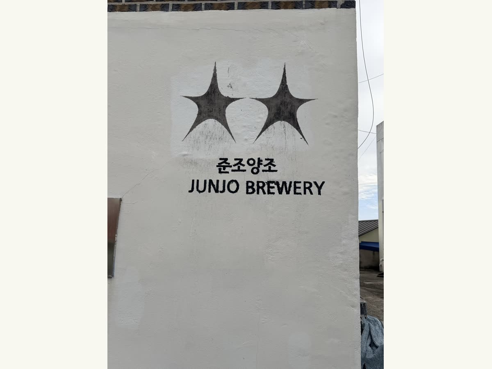
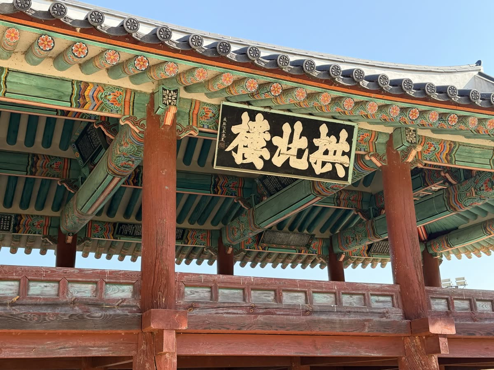
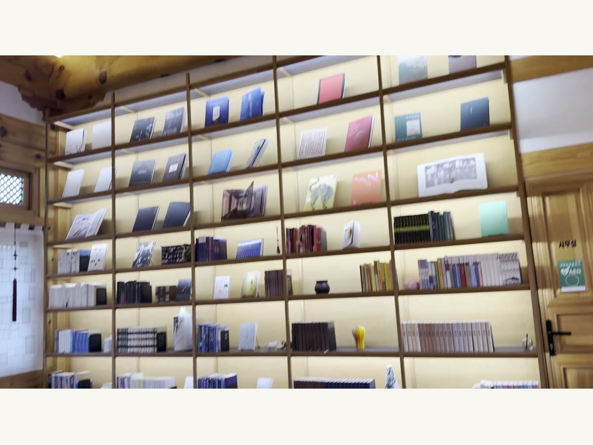
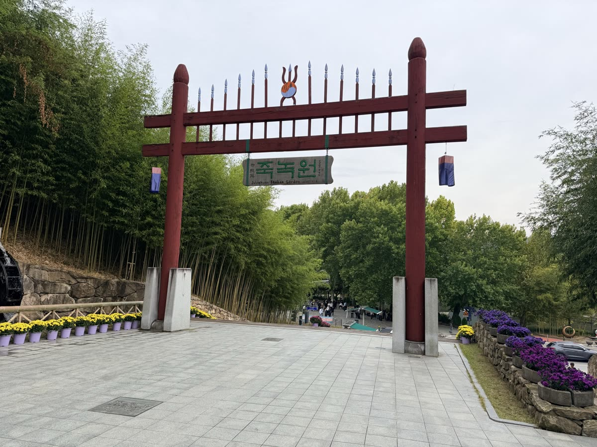

— · 6일 · 촬영 동행 기록
제3차 인플루언서 투어
캐나다 인플루언서와 스태프 총5명의 남해·공주·부여·전주·담양 촬영에 동행했습니다.
촬영 일정
최종 촬영 일정 기준으로 정리했습니다.
- 인천공항 입국 → 서울 이동·체크인
- 서울 → 남해 이동·체크인
- 남해 양조장 내부 시설·전통주 촬영 → 다랭이마을 디저트 촬영 → 당일 저녁 공주 이동
- 공주버스터미널 DRT 09:10 탑승 → 공산성 → 부여 부소산성·낙화암·궁남지 → 전주 이동
- 전주한옥마을·경기전·전동성당·전주 난장·남부시장 청년몰
- 오목대·자만벽화마을 → 담양 죽녹원 → 서울 복귀
촬영 동행 사진



